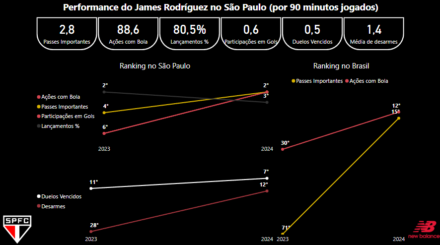

De São Paulo para Colômbia
Após a chegada de James Rodríguez ao São Paulo em 2023, muitos questionam o desempenho do atleta com a camisa do time, uma vez que ele parece demonstrar mais produtividade quando defende seu país. Isso é ainda mais evidente após suas grandes atuações na Copa América, onde foi comparado e considerado superior a Lionel Messi.
Será que esse contraste de performance entre São Paulo e a seleção colombiana é real, ou pode ser apenas um viés intuitivo? Aqui não vou me alongar em discutir questões como modelos de jogo, treinamentos e vida pessoal do atleta. Vou me basear em alguns números de performance de James, comparando com o desempenho dos jogadores do São Paulo e também dos principais times do Brasil que figuraram na Série A nos últimos anos.
A curiosa performance de James
A seguir, apresento um dashboard criado no Power BI mostrando alguns dados do atleta desde 2023. Para cada métrica, utilizo uma ponderação pelos minutos que o jogador ficou em campo, para equilibrar a análise pelo tempo jogado e ser justo com todos os atletas analisados.

Na métrica de passes importantes, por exemplo, em vez de aplicar a média de passes importantes por jogo sem levar em consideração o tempo jogado, tomamos como base a média de passes importantes pelos minutos reais jogados. Não é justo comparar um atleta que deu 3 passes importantes entrando no segundo tempo e jogando 30 minutos, com outro da mesma posição que jogou 75 minutos e deu apenas 1.
Portanto, ao interpretar a medida, vemos que James, quando atua pelo time, fornece em média 2,8 passes importantes a cada 90 minutos em campo. Mas será que essa é uma boa média? O visual do ranking nos dá essa noção. O jogador foi o quarto melhor do time em 2023 e o segundo neste ano, considerando novamente os minutos jogados de todos os atletas. Além disso, quando trazemos essa ótica para os jogadores do Brasil, ele atualmente é o 15º melhor jogador no quesito.
Expandindo nossa análise para outras características, James possui uma média de 88,6 ações com bola por partida (2º no time e 12º no Brasil). Isso mostra que, além de contribuir com passes importantes, ele é muito participativo no jogo.
Falando em participação, James tem uma média de 0,6 participações em gols por 90 minutos jogados, ficando em segundo lugar no time em 2024. Além disso, ele possui uma excelente taxa de lançamentos certos, aproximadamente 81%, mantendo-se entre os 3 mais eficientes do São Paulo desde sua chegada.
Fora do contexto criativo, o jogador ainda contribui na disputa pelo controle da posse, vencendo 0,5 duelos a cada 90 minutos (7º no time em 2024). Ele também tem uma média de 1,4 desarmes por jogo, estando atrás de apenas 11 jogadores do São Paulo em 2024, mesmo não sendo seu principal papel contribuir nessas métricas.
Opinião
Deste modo, a partir dos pontos abordados, acredito que James já demonstra bons indícios de performance no São Paulo. Não são tão espetaculares quanto na seleção colombiana, mas ele já lidera muitos fatores importantes que impactam no jogo pelo Tricolor.
Em resumo, creio que, para afirmar se o desempenho de James alcançará um potencial ainda maior, devemos dar tempo, não de espera, mas de jogo, para que possamos fundamentar ainda mais nossas decisões, pautadas em números e performance.